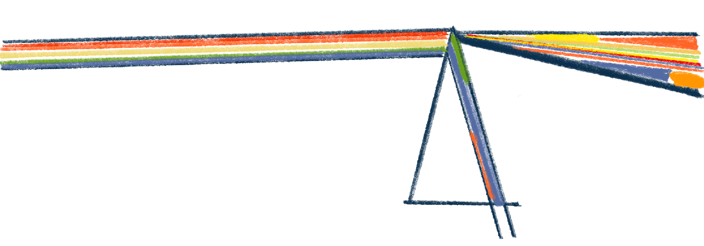
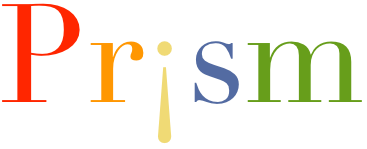

the diatribe · upper-left · set your aperture
[event framing loads here]
drag · find the band
center · neutral
/
center · mirrored
frustrated
z · +0.00 · neutral
realized
parallelograms · legislation — coming
x +0 · y +0
/
intensity · 0
/
fluid
0/180
AI-Derive · evt_001 test set
Event-specific scoring for ~18 notable members. Uses your own Anthropic API key (not stored). Commit a pin first so the graph is live.